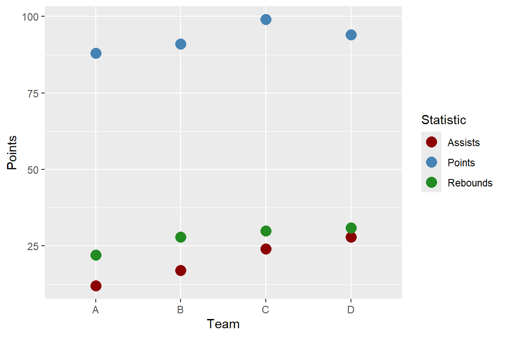

| Team | Points | Assists | Rebounds |
|---|---|---|---|
| A | 88 | 12 | 22 |
| B | 91 | 17 | 28 |
| C | 99 | 24 | 30 |
| D | 94 | 28 | 31 |
import-data
Loading Data Into R
How do I load my data?
Where does my data live?
For this check-in you are asked to work through reading in different data sets. You are expected to create your own Quarto document to complete this activity.
The folder Age_Data contains several data sets with the names and ages of five individuals. The data sets are stored as different file types. Download Ages_Data.zip here, make sure to unzip the folder, save these in a reasonable place (e.g., STAT210 > Week 5 > Checkins or STAT210 > Checkins > Week 5).
Extracting zip folders
You will need to extract the contents of the ages.zip file, that means you will need to uncompress the files from the folder for RStudio to know where to get the data from.
Tidy Data
Tidy Data
![An educational graphic explaining 'Tidy Data' with text and a simple table. The main text at the top reads, 'TIDY DATA is a standard way of mapping the meaning of a dataset to its structure,' followed by the attribution to Hadley Wickham. Below, it explains the concept of tidy data: 'In tidy data: each variable forms a column, each observation forms a row, each cell is a single measurement.' To the right, there is a small table with three columns labeled 'id,' 'name,' and 'color,' demonstrating how each column is a variable and each row is an observation. The table contains entries such as 'floof' (gray), 'max' (black), and 'panda' (calico). The image ends with a citation for Hadley Wickham's 2014 paper on Tidy Data.](https://cdn.myportfolio.com/45214904-6a61-4e23-98d6-b140f8654a40/85520b8f-4629-4763-8a2a-9ceff27458bf_rw_1920.jpg?h=21007b20ac00cf37318dca645c215453)
Same Data, Different Formats
Different formats of the data are tidy in different ways.
| Team | Statistic | Value |
|---|---|---|
| A | Points | 88 |
| A | Assists | 12 |
| A | Rebounds | 22 |
| B | Points | 91 |
| B | Assists | 17 |
| B | Rebounds | 28 |
| C | Points | 99 |
| C | Assists | 24 |
| C | Rebounds | 30 |
| D | Points | 94 |
| D | Assists | 28 |
| D | Rebounds | 31 |
Connection to ggplot
Let’s make a plot of each team’s statistics!
Code
ggplot(data = bb_wide,
mapping = aes(x = Team)) +
geom_point(mapping = aes(y = Points,
color = "Points"),
size = 4) +
geom_point(mapping = aes(y = Assists,
color = "Assists"),
size = 4) +
geom_point(mapping = aes(y = Rebounds,
color = "Rebounds"),
size = 4) +
scale_colour_manual(
values = c("darkred",
"steelblue",
"forestgreen")) +
labs(color = "Statistic")
Code
ggplot(data = bb_long,
mapping = aes(x = Team,
y = Value,
color = Statistic)) +
geom_point(size = 4) +
scale_colour_manual(
values = c("darkred",
"steelblue",
"forestgreen")) +
labs(color = "Statistic")Tidy Data
![An illustration featuring a cute, cartoonish scene with three characters sitting on a bench. In the center, there is a smiling blue rectangular character resembling a tidy data table, holding an ice cream cone. On either side of the table are two round, fluffy creatures: one pink on the left and one green on the right, both also holding ice cream cones. Above the characters, the text reads 'make friends with tidy data.' The overall tone of the image is friendly and inviting, encouraging positive feelings toward tidy data.](https://cdn.myportfolio.com/45214904-6a61-4e23-98d6-b140f8654a40/40488240-4609-4dc3-8920-693e078b55ce_rw_1920.jpg?h=2e96a7e21e19c43867546498da026649)
Working with External Data
Common Types of Data Files
Look at the file extension for the type of data file.
. . .
.csv : “comma-separated values”
Name, Age
Bob, 49
Joe, 40. . .
.xls, .xlsx: Microsoft Excel spreadsheet
- Common approach: save as
.csv - Nicer approach: use the
readxlpackage
. . .
.txt: plain text
- Could have any sort of delimiter…
- Need to let R know what to look for!
Common Types of Data Files
What is the delimiter (e.g. comma, tab, space, etc.) for each data file?


Loading External Data
Using base R functions:
read.csv()is for reading in.csvfiles.read.table()andread.delim()are for any data with “columns” (you specify the separator).
Loading External Data
The tidyverse has some cleaned-up versions in the readr and readxl packages:
readrpackage is loaded withlibrary(tidyverse)read_csv()is for comma-separated data.read_tsv()is for tab-separated data.read_table()is for white-space-separated data.read_delim()is any data with “columns” (you specify the separator). The above are special cases.
readxlwill need need to be loaded separately withlibrary(readxl)read_xls()andread_xlsx()are specifically for dealing with Excel files.
Remember to load the readr and readxl packages first!
What’s the difference?
Compare the two functions read.csv() and read_csv() - what do you notice about the possible arguments you can use in each? Why is read_csv() the better option?